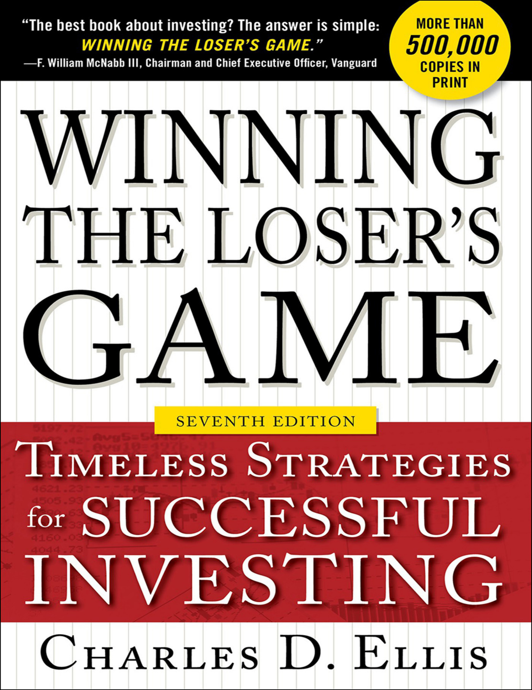

By Charles D. Ellis · 7th Edition, 2017 · 278 pages
David F. Swensen, the legendary Chief Investment Officer of Yale University, wrote the introduction to this seventh edition. His endorsement carries unusual weight because he is perhaps the most successful institutional investor in history — Yale's endowment returned 12.9% annually over 30 years, compared to 8.8% for a passive 60/40 portfolio, adding $28.2 billion in value. Yet even Swensen agrees: individuals should index everything.
Swensen's argument is that the investment world divides cleanly into two correct approaches at the extremes. You either index everything — the right choice for almost all individuals and most institutions — or you manage everything actively with extraordinary resources. Yale employs 30 full-time investment professionals who conduct extreme due diligence (one partner contacted a potential manager's third-grade teacher for a reference). Without that kind of infrastructure, active management is a losing proposition.
“Unfortunately, most investors end up in the sloppy middle, paying high fees (and unnecessary taxes) for mediocre performance.”—David F. Swensen
The crux of the problem, Swensen explains, is that mutual fund managers fail their fiduciary responsibility by not limiting assets under management. A fund manager's 20 best ideas are genuinely good — but bloated fund size forces them to hold 50 or 100 positions, and the 50th best idea is far inferior to the 20th. Size is the enemy of performance, yet it is the friend of manager profits. The conflict between fiduciary duty and profit motive resolves, almost always, in favor of profits.
Swensen's one major disagreement with Ellis is worth noting: he believes Ellis underestimates the value of diversification beyond equities. Swensen would add Treasury bonds and TIPS to the mix, not for returns but for stability during market stress. He also worries that Ellis's suggestion that young investors might use modest leverage could exacerbate the well-documented tendency to chase performance.
The book's central metaphor comes from Dr. Simon Ramo, a scientist and co-founder of TRW Inc., who studied tennis statistically and discovered something remarkable. Tennis is not one game but two. In professional tennis, about 80% of points are won through brilliant shots — powerful serves, laserlike precision, rallies that force errors. In amateur tennis, about 80% of points are lost through unforced errors — balls into the net, double faults, shots out of bounds. Professionals play a winner's game; amateurs play a loser's game. The strategy for each is fundamentally different.
Ellis's insight is that investing has undergone exactly this transformation. Fifty years ago, when institutions did only 10% of trading and individual amateurs did 90%, skilled professionals could regularly profit from the mistakes of unsophisticated opponents. That was a winner's game. Today, institutions execute more than 98% of all exchange trades. The professionals are the market. They collectively determine prices with such thoroughness that it is nearly impossible for any one of them to consistently outperform the consensus they collectively create.
“Investment management, as traditionally practiced, is based on a single core belief: investors can beat the market, and superior managers will beat the market. That optimistic expectation was reasonable 50 years ago, but not today.”—Charles Ellis
The data is unambiguous: in round numbers, 70% of mutual funds underperform their chosen benchmarks over one year. Over 10 years, the figure rises above 80%. A few funds beat the market in any particular year, and some beat it over a decade, but nobody has figured out how to identify them in advance. The competitive environment has changed so dramatically that it keeps getting worse — more brilliant, hardworking people with extraordinary equipment and superb information keep joining the competition.
Ellis then delivers the devastating cost arithmetic. Assuming 80% annual portfolio turnover (the industry average), trading costs of 1% to buy and 1% to sell, plus 1.25% in mutual fund fees and expenses, the typical fund's operating costs before taxes are 3.25% per year. For the fund manager to merely match the market's expected 7% return, he must earn 10.25% gross — outperforming the consensus of experts by more than 46%. This is virtually impossible in a market dominated by those same experts.
Active investing is always a negative-sum game at the margin. It would be zero-sum except for the large costs — fees, expenses, commissions, and market impact — that must be deducted. These costs total billions of dollars every year. The burden of proof lies squarely on the manager who claims to be a winner.
The hardest part of investing, Ellis argues, is not figuring out the optimal policy — it is staying committed to that policy through bull and bear markets. Benjamin Disraeli called it “constancy to purpose.” Being rational in an emotional environment is extraordinarily difficult and extraordinarily important. The cost of infidelity to your own commitments can be devastating.
Peter Drucker distinguished between working efficiently (doing things the right way) and working effectively (doing the right things). Trying to beat the market through active management may be efficient effort, but indexing is effective — it is doing the right thing. Day trading, Ellis adds bluntly, is “the worst of all: a sucker's game. Don't do it, ever.”
Other loser's games illustrate the pattern. Admiral Samuel Eliot Morison wrote that in warfare, the side making the fewest strategic errors wins. Tommy Armour observed that the best way to win at golf is to make fewer bad shots. Winner's games self-destruct when too many players flood in — like gold rushes that finish ugly. Flying an airplane was once a winner's game for brave young pilots; now it is a loser's game where the rule is simply: don't make any mistakes.
If the loser's game is about what's gone wrong, the winner's game is about what could go right. Ellis identifies three errors that investment professionals have committed against their own industry. The first error of commission is defining the professional mission as “beating the market” — a promise that once had credible prospects but no longer does. Of the top 20 pension fund managers serving U.S. institutions 40 years ago, only one remains in the top 20 today. In the United Kingdom, only two of the top 20 from 30 years ago still lead.
The second error is allowing the economics of the investment business to dominate the values of the investment profession. Assets under management have risen tenfold over 50 years, and fees as a percentage of assets have multiplied more than five times. The result is strongly increasing profitability — compensation for skilled individuals has increased nearly tenfold. Business disciplines increasingly focus on “asset gathering” rather than investment performance, because expanding assets usually works against performance.
The third error — an error of omission — is the most troubling. Investment firms have lost sight of investment counseling, the most valuable service they can provide. Most investors are not experts. They need help understanding risk, setting realistic objectives, selecting appropriate asset classes, and — most important — not overreacting to market highs or lows. Counseling can add far more to long-term returns than active management can hope to produce.
“The most valuable part of what investment professionals can do is the least difficult: investment counseling. Price discovery is fascinating but extraordinarily difficult. Counseling is much easier, far more important, and has far more impact.” —Charles Ellis
The investment profession has two parts: price discovery (trying to outsmart the market) and investment counseling (helping clients make wise decisions). Price discovery gets all the glamour but is becoming impossibly hard as more professionals with more tools compete for every scrap of advantage. Counseling gets little attention but is where the real value lies. Ellis compares it to medicine, where simply washing hands proved second only to penicillin in saving lives.
Performance data is systematically misleading. It is reported as time-weighted returns rather than value-weighted, so it doesn't reflect the actual experience of investors who put money in and take money out. The “losers” underperform 1.5 times as much as the “winners” outperform. The data is not adjusted for taxes on 60–80% turnover. And investors' tendency to buy after strong results and sell after poor ones obliterates roughly one-third of their funds' actual long-term returns.
The skiing analogy captures what the winner's game should look like. At Vail or Aspen, everyone has a wonderful day — not because every skier is expert, but because each has chosen the trail matched to their skills. Some prefer gentle bunny slopes, others prefer black diamonds. When the match is right, everyone wins. Investment counseling should accomplish exactly this: matching each investor to the program right for their skills, experience, financial situation, and tolerance for uncertainty.
The changes that transformed markets into a loser's game are staggering in scale. New York Stock Exchange trading volume has increased more than one thousand times — from about 3 million shares a day to over 5 billion. Over 120,000 analysts hold CFA credentials (up from zero fifty years ago), with 200,000 more candidates. Reg FD commoditized corporate information that was once the secret sauce of active management. More than 320,000 Bloomberg terminals distribute data 24 hours a day. Algorithmic trading, hedge funds, private equity, and globalization have turned the market into the world's largest and most active prediction market.
Consultant data, which institutional investors rely on to select managers, is itself flawed. Removing two biases — backdating and survivor bias — from conventionally presented data often shifts the apparent record from “better than the market” to “below the market.” Even large and sophisticated institutions are being misled.
The only way active managers can beat the market is to discover and exploit other active investors' mistakes. In theory, there are four approaches: market timing, stock selection, strategic portfolio changes, and developing a superior long-term investment philosophy. Ellis systematically demolishes each one.
Market timing is the most seductive and the most thoroughly debunked. The data is stark: over a 36-year period from 1980 to 2016, U.S. equities returned 11.4% annually. Remove just the 10 best days — one-tenth of one percent of nearly 10,000 trading days — and the return drops to 9.2%, a 19% reduction. Remove the 20 best days and it falls to 7.7%. Remove 30 and it collapses to 6.4%. All of the total returns on stocks over 20 years were achieved in just the best 35 days — less than 1% of 5,000 trading days.
The timing trap is devastatingly simple: investment history shows that the very first weeks of a market recovery produce a substantial proportion of all the gains that will eventually be experienced. The best days cluster at the bottom of market panics, exactly when a market timer is most likely to be sitting in cash. Over 112 years, missing just the 10 best days out of 49,910 trading days would have cost two-thirds of all gains. Removing the 5 best days from 72 years would have cut cumulative returns by nearly 50%. “Just as there are old pilots and bold pilots, but no old, bold pilots,” Ellis writes, “there are no investors who have achieved recurring successes in market timing.”
Stock picking fares no better. Terrance Odean of UC Berkeley studied nearly 100,000 trades by retail investors over 15 years and found that stocks they bought underperformed the market by 2.7% in the following year, while stocks they sold outperformed by 0.5%. Lakonishok, Shleifer, and Vishny found that professional fund managers' trading subtracted 0.78% from returns they would have earned by simply keeping their portfolios constant. The Plexus Consulting Group studied 80,000+ trades and found that while typical purchases added 0.67% short-term, typical sales subtracted 1.8%.
Strategic portfolio shifts — rotating between growth and value, sectors, or asset classes — have an equally poor record. The Nifty Fifty growth stocks of the early 1970s produced exceptional results until the late 1970s, when the same stocks produced exceptional losses. The same pattern repeated with oil stocks in the 1980s, pharmaceuticals in the 1990s, technology in 2000, and financials in 2008. At the peak, the confident consensus is always “This time it's different!”
The antique fair analogy captures why beating the market is so hard. Imagine arriving at a fair with four scenarios: alone for two hours (easy pickings), with 24 expert shoppers (harder), after 1,000 special guests have already picked through everything (slim pickings), or as one of 50,000 on day three where everyone is both buyer and seller, all prices are known, and all studied at the same famous schools. The stock market is scenario four.
Ellis identifies four powerful truths that wise investors understand: (1) the most important decision is your long-term asset mix, (2) that mix should be determined by purpose, time horizon, and ability to stay the course, (3) diversify within and among asset classes, and (4) be patient and persistent — good things come in spurts, usually when least expected. “Plan your play and play your plan,” say the great coaches.
The market's apparent irrationality is actually rational at a deeper level. Prices reflect perceptions of future value — estimates of estimates of other investors' estimates. The market's pricing mechanism is neither stable nor consistent, like the apocryphal “butterfly of chaos.” That's why economists joke that the stock market has anticipated nine of the last three recessions.
Every investor must understand two characters. Mr. Market, introduced by Benjamin Graham in The Intelligent Investor, is emotionally unstable, manic-depressive, and utterly captivating. He swings between euphoria and despair, constantly changing prices to provoke action. He is an “economic gigolo” — his only objective is to be attractive. Mr. Value, by contrast, is stolid, consistent, and boring. He grinds out real economic work day after day — inventing, making, distributing goods and services. Mr. Market gets all the attention; Mr. Value does all the work.
The weather-versus-climate analogy is one Ellis returns to throughout the book. Daily weather is unpredictable and sometimes violent. Long-term climate is sensible and reliable. You would not choose where to build your home based on last week's weather. Similarly, you should not choose your investments based on recent market conditions. Mr. Market's daily changes are no more important to a long-term investor than the daily weather is to a climatologist.
The biggest risk in investing is neither Mr. Market nor Mr. Value — it is the emotional incapacities hidden inside the investor. “Know thyself” is the cardinal rule. The hardest work in investing is not intellectual; it is emotional. Investing, Ellis insists, is not entertainment — it is a sober responsibility, a continuous process like refining petroleum or manufacturing integrated circuits. “If anything in the process is ‘interesting,’ it's almost surely wrong. That's why benign neglect is, for most investors, the secret to long-term success.”
Tom Wolfe's The Right Stuff provides another analogy: young test pilots were perpetually stunned by “inexplicable” accidents that were actually predictable consequences of pushing beyond all boundaries. Investors similarly treat market crashes as shocking “six sigma events” when they are actually within the normal bell curve of market experience. Regression to the mean dominates the long term — unusually high stock prices are not good for you, because you will eventually give back every increment above the long-term central trend.
Ellis poses a thought experiment: if you could assemble a dream team of every great investor — Warren Buffett, Charlie Munger, David Swensen, George Soros, David Einhorn, plus all the analysts at Goldman Sachs, Morgan Stanley, Fidelity, and Capital Group, plus every hedge fund manager in the country — all working for you every day, would you take it? Of course you would. And you can have them. Just index.
The index fund replicates the market, and the market in a professional-dominated era reflects the accumulated expertise of all these professionals making their best judgments on pricing all the time. As they learn more, they update their judgments, which means when you index, you always have the most up-to-date expert consensus. The stock market is the world's largest prediction market, with independent experts putting up real money and professional reputations to back their estimates.
“Most investors, both institutional and individual, will find that the best way to own common stocks is through an index fund that charges minimal fees.”—Warren Buffett, Berkshire Hathaway Annual Report
Indexing delivers benefits beyond raw performance: lower fees, lower taxes, lower operating expenses, and peace of mind. No regret about past mistakes, no worry about potential future regret. The persistent costs of active investing — fees, taxes, trading costs — “do as much harm to investment portfolios as termites do to homes.”
Ellis anticipates every objection active managers raise. Tracking error in small-cap indexes? Far smaller than active managers' errors. Index funds stuck with overpriced large caps like GE in 2000? They also held them when they were cheap. “Settling for average is un-American”? Matching the market average is the winning strategy because the average fund and average investor consistently fall short of the market. The most devastating finding: Morningstar's ubiquitous star ratings have little or no value in predicting future performance, but low fees predict outperformance in every category.
Active management fees, correctly calculated, are far higher than they appear. Stated as 1% of assets, they look modest. But if expected returns are 7%, fees represent about 15% of returns. And since index funds deliver market returns at 0.03–0.10%, the incremental cost of active management as a percentage of incremental returns is over 100%. All the value added — and then some — goes to the manager. The investor puts up all the money, takes all the risk, and keeps nothing.
Ellis invokes Thomas Kuhn's The Structure of Scientific Revolutions to explain why active management persists despite the evidence: change is hard when careers and incomes depend on old assumptions. Over 40% of Americans profess belief in creationism despite the evidence for evolution. Rejecting a line of work is especially difficult when large incomes depend on its continuation.
ETFs have mushroomed since their 1993 introduction to over 2,000 with $3.4 trillion in assets. But Ellis warns that over 95% of ETFs and 85% of ETF assets are specialized — single-country, single-commodity, or leveraged products used mainly by dealers and hedge funds for hedging, not by long-term investors. Unless you're an expert with a specific reason, stick to plain-vanilla broad-market ETFs.
Pogo, the cartoon philosopher, observed: “We have met the enemy and he is us.” This captures the chapter's entire thesis. The true order of importance in investing is the reverse of what most people assume. The wrong concept puts the investment manager at the center, the market second, and the individual investor as a small afterthought. The right concept places the investor at the center, the market second, and the manager as a minor supporting actor.
Fifty years ago, active managers genuinely occupied the most important role. But the confluence of changes — institutional dominance, information technology, professional competition — has shrunk the manager's viable role to almost nothing. Ironically, this is not because managers have gotten worse but because they have collectively gotten so good that no individual can break out of the pack.
Behavioral economics provides the framework for understanding investor risk. Ellis catalogs more than a dozen biases that systematically distort our decisions: failure to appreciate regression to the mean, ignoring base rates, believing in “hot hands,” anchoring to first impressions, illusion of control, hindsight bias, the halo effect, overweighting dramatic or media-covered events, confirmation bias, confusing familiarity with understanding, and an astonishing capacity for self-serving distortion. Nearly 80% of people believe they are above-average drivers, listeners, parents, investors — and 80% believe their children are also above average.
The practical investor risks Ellis identifies are specific and actionable. Trying too hard — taking too much market risk through leverage. Not trying hard enough — holding too much cash. Being impatient — if you check stock prices more than once a quarter, you're satisfying curiosity, not investment need. Changing funds after less than 10 years — investing should be “marital, not dating.” Borrowing too much — three out of four fortunes that are lost involve borrowed money. Being emotional — our internal demons (pride, fear, greed, exuberance, anxiety) are the buttons Mr. Market most likes to push.
The investor's Venn diagram defines the sweet spot: the overlap between your zone of competence (where you have real skill) and your zone of comfort (where you remain calm and rational). “Sell down to the sleeping point” is the sage advice. Don't go outside your competence zone (you'll make costly mistakes) or your comfort zone (you'll make emotional decisions). Investor risk can be reduced through four actions: avoid operational mistakes, determine realistic objectives, design a sensible long-term strategy, and stay committed.
Great strategists seek sustainable competitive advantage. Army generals want the high ground. Coaches want stronger, faster players. Companies want brand loyalty and patent protection. In investing, Ellis identifies three ways to seek advantage: the physically difficult way (work harder — everyone's already doing this), the intellectually difficult way (think deeper — available to very few), and the emotionally difficult way (maintain perfect calm rationality at all times — easy in theory, nearly impossible at market extremes). Then there is the easy way: index.
Indexing's unfair advantages are comprehensive: higher long-term returns (80% of active managers fall short), lower fees (10 basis points vs. 100–120), lower taxes (turnover under 10% vs. 60%+, saving roughly 1% of assets per year), lower commissions, lower market impact costs, convenience, and freedom from the many decisions — timing, stock picking, manager selection — that can go wrong. Most critically, indexing frees the investor to concentrate on what actually matters: defining long-term goals and designing the right asset mix.
Buffett once estimated the annual “horrendous costs” of active investing: over $40 billion for trading Fortune 500 stocks, $35 billion for management fees and expenses, and $25 billion for spreads, options, and annuities — totaling $100 billion. This was “just” 1% of the Fortune 500's total market value, but it consumed a huge chunk of the $334 billion those companies actually earned that year. Net investor returns were less than $250 billion — a measly 2.5% on $10 trillion. “Slim pickings,” Buffett observed.
The ideal index fund tracks the worldwide total market. The optimal plain-vanilla mix is about half domestic, half international. Home-country bias is universal — British investors overweight UK stocks, Canadians overweight Canadian stocks, Japanese overweight Japanese stocks. This may be acceptable if your home country has a large, complex, dynamic economy and you have significant financial obligations in that currency.
The indexing argument is strongest in the most efficient markets (U.S. large caps, UK, Japan) but holds even in less efficient ones. In every major market, index funds beat most actively managed funds investing in that same market. The argument for active management is relatively stronger in small caps, emerging markets, and frontier markets — but even there, the hurdle of fees and costs makes sustained outperformance rare.
Fired managers, Ellis notes, typically outperform their newly hired replacements. Data consistently shows that investors get hiring and firing backwards — they fire after the worst years and hire after the best. Market history will repeat itself because it's so hard for people as a group to learn or change.
The paradox at the heart of investing is that funds with very long-term purposes — retirement savings, endowments, foundations — are almost universally managed to meet short-term objectives that are neither feasible nor important. The solution has four steps: understand your real investment objectives, define realistic risk-and-return policies, establish the right asset mix, and develop the self-discipline to maintain that plan through market gyrations.
Ellis lists ten factors that make each investor unique: age, assets, income, time horizon, number of dependents, market experience, risk tolerance, likely inheritance, intended bequests, and philanthropic aspirations. Just as ski resorts mark trails by difficulty so each skier finds the right slope, every investor needs to be matched to the right investment program.
Six questions every investor should answer honestly: What are the real risks of a bad short-term outcome? What would your emotional reaction be? How well do you know market history? What other resources do you have? Any legal restrictions? Any unanticipated consequences of interim fluctuations? Ellis even suggests going to a library and spending hours reading newspapers from 1929, 1987, the dot-com era, or 2008 to build emotional resilience.
The paradox persists because of institutional incentives: managers face quarterly performance reviews, career risk from short-term underperformance, and client pressure to show results now. Portfolio managers are understandably hard-pressed to keep up with the market when they hold 60–90 different positions, face frequent benchmark comparisons, and know that a few bad quarters can cost them their jobs. Investment counseling — helping clients articulate long-term goals — is more important to long-term success than investment management itself, yet most investors never do the disciplined work of formulating policies. This is the investor's fault, not the manager's. Avoiding market risk also has a real opportunity cost: you should understand both the gains and losses at each level of risk taken and the opportunity cost of each level of risk not taken.
Time is the Archimedes lever of investing — it transforms investments from their least attractive to their most attractive form. The average expected return is not affected by time, but the range of actual returns around that average narrows dramatically. Over one year, stock returns have ranged from +53% to -37%. Over 10 years, there has been essentially just one losing period. Over 20 years, stocks have never lost money in real terms.
The absurdity of short-term thinking becomes clear with a simple calculation. A $40 stock with a 3.1% daily range and an expected daily return of 0.04% (8% annual divided by 250 trading days) has an annualized one-day range of roughly ±387%. Holding a stock for one day is not investing — it is rank speculation.
Most investors set far too short a time horizon. A 5-year horizon suggests a 60/40 stock-to-bond allocation. A 10-year horizon suggests 80/20. A 15-year horizon suggests 90/10. But most individual investors will be investing for 30–50+ years — and if they plan to leave money to heirs, the true horizon extends to 80 or more years. Using the truly appropriate time horizon would lead to significantly higher equity allocations and higher long-term returns.
Returns come in two forms: predictable cash (dividends and interest) and unpredictable short-term price changes. Long-term investors should focus overwhelmingly on the first. The average rate of return has three components: the real risk-free rate, a premium for expected inflation, and a premium for market risk.
Treasury bills appear safe in nominal terms but provide an inflation-adjusted real return of essentially zero over time. They're positive in nominal terms almost every year, but inflation-adjusted returns are positive less than 60% of the time. T-bills offer return of your money, not return on your money.
The long-term data (1900–2016) is compelling: $1 invested in equities grew to $38,932 (9.51% annual compound). In bonds: $620 (5.68%). In cash: $82 (3.86%). Inflation-adjusted real returns over 25-year periods: stocks 6.6%, bonds 1.8%. The compound interest effect is staggering — $1 at 8% becomes $4.66 in 20 years; at 12%, it becomes $9.65.
“Beware of averages,” Ellis cautions. Stocks returned an average of 10% per year over 75 years, but actually returned exactly 10% just once (in 1968). They came close only three times total. The “average” is earned across delightful and dreadful markets together.
Ellis admits that in nearly 50 years of continuous involvement with many of the world's best investors, he found only two major opportunities that weren't obvious to many others — a discovery rate of once every 25 years.
Ellis distinguishes between risk (where probabilities are known, like actuarial tables) and uncertainty (where they are not, like investing). He identifies four types of risk: price risk (buying too high), interest rate risk, business risk (company failures), and failure risk (total loss, as with Enron, WorldCom, Polaroid). The real risk is simple: not having enough cash when the money is really needed.
Academic research breaks investment risk into three categories: market risk (unavoidable, rewarded), individual-stock risk (avoidable, not rewarded), and stock-group risk (avoidable, not rewarded). Diversification eliminates the unrewarded risks. A single stock carries 60% specific-issue risk and 15% market-segment risk. A typical portfolio reduces these to 4% and 2%. Several managers bring them to 0.5% each. An index fund eliminates both entirely, leaving only the market risk that you are actually compensated for taking.
Total equity return has four components: (1) the risk-free return after inflation, (2) the equity market risk premium, (3) potential extra return from stock-group exposure, and (4) potential extra return from individual stock selection. Components 3 and 4 carry risk you are never rewarded for — manage component 2 (market risk) instead. Portfolio return comes from three sources in order of importance: the level of market risk assumed or avoided, the consistency with which that risk level is maintained through cycles, and the skill with which specific-stock and group risk are eliminated through diversification.
Leverage, Ellis warns, is “all too often the instrument of self-destruction.” Investing should be primarily defensive. The great secret to long-term success is avoiding serious, permanent loss. Remember the difference between maximization (Icarus, who flew too close to the sun) and optimization (finding the best sustainable level of risk).
Investing for most managers is a problem of engineering, not art or science. The key lesson: define the real problem correctly and you're well on the way to the solution. Individual investors should never buy individual corporate bonds — diversification is an absolute necessity in bond investing, so use well-managed bond funds. Portfolios of medium-to-lower-grade bonds, after absorbing all defaults, provide higher net returns than high-grade portfolios. How much to invest in bonds matters far more than which specific bonds.
The great secret to long-term success is avoiding serious, permanent loss. Investing should be primarily defensive. The difference between maximization and optimization is critical — Icarus was a maximizer who flew too high. Leverage is all too often the instrument of self-destruction. Rating agencies' biggest errors are in estimating group risks, not individual issuer risk versus peers — proven again in 2008 with triple-A rated subprime mortgage securities, and before that with triple-A street railways in the 1920s that all went bankrupt when automobiles arrived. The yield spread on lower-grade bonds compensates for occasional defaults and then some, which is why well-diversified medium-grade portfolios produce higher net returns over time.
Most investors make a fundamental framing mistake by thinking of their investment portfolio as a standalone entity. A 30-year-old MBA earning a good salary should not put 30% in bonds just because the rule says “invest your age in bonds.” The net present value of her future earnings — 35–45 years of salary — represents over 95% of her total financial portfolio, and it is inherently bond-like (stable, predictable income). Her securities portfolio should therefore be at least 100% stocks.
The whole-picture portfolio includes human capital (future earnings), Social Security, pension value, 401(k), home equity, and anticipated inheritance. When stocks drop 20%, the change affects only a small part of the whole picture — dramatically reducing anxiety compared to looking at the securities portfolio in isolation. Approaching retirement, the two most powerful financial moves are waiting until 70 to claim Social Security and continuing to work — both are compelling from the whole-picture perspective.
The principal reason to articulate long-term investment policy explicitly and in writing is to protect yourself from yourself. Without a written policy, investment decisions get resolved in haste during distressing markets — wrong decision, wrong time, wrong reasons. Jason Zweig captured it perfectly: “If we shopped for stocks the way we shop for socks, we'd be better off.” We feel good when stocks go up (wrong — they're more expensive) and bad when they go down (wrong — that's the necessary first step to buying low).
Four characteristics from anxiety research explain why we overestimate risk: large-scale consequences, lack of personal control, unfamiliarity, and sudden occurrence. This is why we fear air travel (30 deaths per year) more than driving (45,000 deaths). Sharp market losses are expected and normal to those who have studied market history — they are predictable in magnitude, just not in timing.
Investment decisions occur at five levels: (1) long-term objectives and asset mix, (2) equity mix (growth vs. value, large vs. small, domestic vs. international), (3) active vs. index, (4) which specific funds or managers, and (5) selecting individual securities and executing trades. The irony is that Level One is the least costly and most valuable, while Levels Four and Five are the most expensive and least likely to add value. Yet investors are dazzled by stock-picking and trading — Mr. Market's favorite territory.
Spending decisions should never influence investment decisions — it must be the other way around. Setting portfolio return targets to fund a desired lifestyle is “nonsense,” Ellis writes. The market does not care what you want to spend. A “cushion of caution” reserve is cash set aside for current spending needs — typically one to three years of living expenses in money market funds or short-term bonds. This reserve must be carefully determined and kept separate from the long-term investment portfolio, whose cash allocation should be minimized to ideally zero. The danger of setting return targets to fund a desired lifestyle is that it forces you to take more risk than appropriate when markets are expensive and expected returns are low — the market's long-term return is a function of earnings growth and valuation, not your spending wishes.
Barr Rosenberg showed statistically that it would take 70 years of observations to prove conclusively that even a large 2% annual excess return was skill rather than luck. Performance statistics in fund advertisements are drawn from far shorter periods. Reports should be treated as statistical estimates with plus-or-minus boundaries, not precise “results.”
The quartile transition matrix demolishes the idea of persistent skill: first-quartile managers have only a 29% chance of staying first-quartile over the next three years, and a 21% chance of falling to the bottom quartile. The pattern across all quartiles is essentially random. Morningstar candidly acknowledges its star ratings have little predictive power, yet 100% of new mutual fund money flows to 4- and 5-star funds. In the months after ratings are handed out, 5-star funds generally earn less than half as much as the broad market index.
The investor behavior gap is perhaps the most devastating finding. From 1997 to 2011, the average mutual fund investor earned only half the returns earned by the average mutual fund. From 1984 to 1998, the S&P 500 gained 17.9% annually but the typical stock fund investor gained only 7%. The reason: chasing performance, frequent switching, holding funds for less than three years. Two major biases compound the problem: survivorship bias (poor performers quietly deleted from databases) and incubation bias (new funds launched only after successful private track records). Together these can add 100+ basis points of distortion. The distribution of long-term active fund performance is stark: 16% of funds underperformed by 2% or more, 57% fell between 0% and -2%, 26% beat the market by less than 2%, and only 2% outperformed by 2% or more. Nearly three-quarters achieved less than market performance — and this is favorably biased by the deletion of failed funds.
The time-series data is equally damning: the percentage of funds outperforming their benchmark declines steadily — 35% over one year, 20% over ten years, 10% over twenty-five years, and only 5% over fifty years. One long-term study found that only 13.25% of surviving mutual funds beat the S&P 500. The bull-to-bear reversal data is perhaps the most dramatic: among 3,896 funds, the #1 performer during a bull market ranked #3,784 in the subsequent bear market. Of the top 20 bull-market funds, most ranked in the 3,000s–3,800s when the market turned.
Three factors are mixed together in all performance data: sampling error (the portfolio may not represent the manager's true skill), market environment (style tailwinds or headwinds), and skill (or its absence). In the short run, sampling error usually has a much larger impact than skill, making short-term performance data nearly useless for identifying talent. Performance measurement is least useful when most needed (short-term) and most accurate when least timely (long-term, by which time it's too late to act).
The “dark matter” comprises the forces making active management increasingly difficult: fees that have risen to surprisingly high levels, and a flood of skilled professionals who have compressed the distribution around the mean. Active fund “success rates” by category over 10 years tell the story: Large Blend 16.6%, Large Growth 12.2%, Small Blend 24.7%, Emerging Markets 43.2%. In three out of four categories, fewer than 35% of funds even keep up with their benchmark.
Nearly half of mutual funds don't even survive for 10 years. Closure rates: 48% of large growth funds, 47% of small growth. Closed funds declined by an average of 1% in their last 6 months, 2.5% in their last year, and 4% in their last 18 months. These “abandoned orphans” and their losses are never reported — no law requires disclosure of closed funds or their pre-death performance. Adding failures back flips the industry narrative from “active usually works” to “active usually does not work.”
Two factors dominate long-term market valuation: corporate profits (and dividends) and the P/E ratio at which earnings are capitalized. A simple framework for estimating future returns: current dividend yield (~1.5%) plus long-term earnings growth (~4.5%) equals roughly 6% fundamental return, before adjusting for P/E changes.
The anatomy of the 1982–1999 bull market is instructive. Dividends yielded 3.5%, earnings grew 7.1% annually for 11 years. Fundamental return: 10.6%. But total return was a stunning 18.9% — the extra 8.3 points came entirely from the P/E ratio doubling from 12 to 29. This speculative return was unsustainable. Objective forces drove part of it: corporate profits rose from 3.5% to 6% of GDP, and long-term government bond rates plunged from 14% to 5% (multiplying bond values eightfold). But regression to the mean made the P/E expansion temporary.
For 60%+ of the twentieth century, the third-best-performing stock market in the world delivered real returns under 2%. At year-end 1964 and year-end 1981, the Dow stood at 875 — 17 years of zero nominal return. Benjamin Graham cautioned: “Long-term investors must be careful not to learn too much from recent experience.”
Individual investors face unique challenges. The trading ratio has completely reversed: in the 1960s, individuals did 90% of NYSE trading. Today, 99% is done by professionals — 75% by the top 100 institutions, 50% by just the top 50. The largest institutions pay their leading brokers as much as $100 million each for the best research. Every time an individual investor buys or sells, the “other fellow” is one of these experts.
Inflation is the most underestimated risk for individuals, especially retirees. At 2% inflation, purchasing power is cut in half in 36 years. At 5%, in just 14 years — and halved again to one-quarter in the next 14. The power of reinvesting dividends dwarfs price appreciation: from 1927 to 1999, $1 grew to $106 from price gains alone, but to $2,592 with reinvested dividends.
Ellis poses a question most investors answer wrong: “Would you prefer stocks go UP or DOWN?” The right answer is down. If you're a buyer of shares (as most investors are for years), lower prices mean more shares per dollar and higher future dividend yields. You buy cows for milk and hens for eggs — wouldn't you prefer low prices?
Ellis's 10 Commandments for individual investors are characteristically blunt:
If you must choose active funds, don't try to find the best fund — find the best fund organization. Look for professional culture, low fees, 30–40-year career retention, consistency in approach, and managers who invest their own money alongside clients. Cambridge Associates candidly reports: “There is no sound basis for hiring or firing managers solely on the basis of recent performance.” The one exception: chronic losers tend to keep losing.
Burt Malkiel's finding is simple and powerful: the best predictor of a mutual fund's future relative performance is based on just two factors — portfolio turnover and expenses. In both cases, less is more. Never choose a fund you wouldn't confidently “double up” on if it underperformed for two or three years. For over 50 years, mutual funds in aggregate have lost 180 basis points annually to the S&P 500, returning 11.8% vs. 13.6%.
Fee arithmetic reveals what percentages obscure. Nobody writes a check — fees are quietly deducted, stated as a percentage of assets rather than dollars. This framing suppresses awareness of their magnitude. Fifty years ago, banks managed pension assets for essentially zero explicit fees. When Morgan Bank started charging 0.25%, Wall Street predicted disaster. Fee schedules have since tripled or quadrupled.
The true cost calculation is devastating. Two investors each start with $100,000 and add $14,000 per year for 25 years. One pays 1.10% in fees, the other pays 0.10%. After 25 years: a $255,423 difference ($1,400,666 vs. $1,145,243). Over a quarter-million dollars evaporated by a fee difference that seemed negligible.
Reg FD commoditized the “secret sauce” of active management — proprietary corporate information is now available simultaneously to everyone. Yet fees remain high because during the great bull market, investors assumed fees didn't matter relative to high returns. The number of professionals devoted to price discovery has grown from perhaps 5,000 fifty years ago to 500,000–1,000,000 today — a phenomenon Ellis calls talent congestion.
Your investing horizon may be far longer than your own life expectancy. If you plan to leave capital to children, grandchildren, or charities, the effective time horizon extends to their lifetimes. A 40-year-old with a 5-year-old son should plan for 80+ years, not 45. Even a 75-year-old with young grandchildren has a very long effective horizon.
The purchasing power of $1 shrank from $1.00 in 1913 to under $0.10 by 2011. From the late 1960s to early 1980s, the inflation-adjusted stock market plunged about 80% — making the 1970s actually worse for investors than the 1930s. The Dow did not regain its inflation-adjusted 1929 peak until 1993 — 64 years to get even.
The $1 million example illustrates four layers of destruction over 35 years (1964–1999). Nominal value: stocks $55M, bonds $15.5M, T-bills $10.7M. After taxes: $30.2M, $6.6M, $4.4M. After inflation: $5.4M, $1.2M, $0.8M. After fund expenses: stocks $1.8M, bonds $755K, T-bills $589K. Taxes and inflation are “fiscal pirates.”
The retirement income target: plan for 75–80% of preretirement spending plus 2–3% annual inflation adjustment. A critical often-forgotten detail: 80% of lifetime healthcare expenditures come in the last six months of life. Women live longer and are often younger than husbands — plan especially for the wife's widow years. The ideal withdrawal rate: limit drawdowns to 4% of a three-year moving average of portfolio value. If you need 5%, put a rolling five years of expenditures in medium-term bonds and the rest in equities. Convert one year from equities to bonds annually unless the market is high — then convert two years, leaning gently against the wind.
Ellis recommends a “day away for investing” once per year: pick a birthday or holiday to systematically answer in writing: How much retirement income? How long retired? What spending rule? What capital per year of retirement? Healthcare needs? Capital for family and philanthropy? The first year takes hours; subsequent years take about one hour updating the prior plan.
The Madoff Ponzi scheme vaporized $50 billion from 8,000 investors. His claimed “split-strike conversion” strategy produced only 11 monthly losses from 1992 to 2008 — consistency that should have been a red flag. His 10% annual return was good enough to attract but not beyond plausibility, the hallmark of effective fraud. The Iceland crisis of October 2008 saw all three banks of a 320,000-person nation nationalized after borrowing $75 billion abroad — $250,000 per person.
The critical distinction: Madoff and Iceland losses were permanent — money gone forever. Markets, by contrast, recover. The greatest risk for long-term investors is not that markets will fall, but that they will panic-sell at the bottom, converting temporary market fluctuations into permanent capital losses. In 14 months during 2008, the U.S. market lost half its value — more than $7 trillion. Yet even that was not as severe as the 1970s collapse in inflation-adjusted terms.
The 401(k) problem is not plan design but implementation. Workers make mistakes at eight stages: not participating, not matching the match, not increasing contributions with raises (aim for 12%+), borrowing or withdrawing between jobs, buying high and selling low, retiring too soon, withdrawing too much, and not anticipating late-life healthcare costs.
The retirement age of 65 is an artifact of Bismarck's Germany in the 1880s, when life expectancy was 45. When Social Security was enacted in 1935, life expectancy at 65 was only 6 years. Today it is 20 years for men, 22 for women. If we maintained the same working-to-retirement ratio as 1935, today's retirement age would be 70+.
Working to age 70 versus retiring at 62 creates a triple benefit: (1) 76% higher Social Security benefits (inflation-protected, for life), (2) eight more years of 401(k) contributions, and (3) eight fewer years of withdrawals. Together these can double a 401(k) balance before investment returns. With returns, the balance can triple to an average ~$360,000, providing $12,000–$15,000 per year in additional income.
Switching 401(k) defaults from opt-in to opt-out dramatically improves outcomes. Join plan: 75% → 95%. Match the match: 70% → 95%. Escalate contributions: 30% → 80%. Sensible investing: 30% → 90%. Tax-deferred investing over 45 years at 8%: $5,000 per year grows to $2.1 million tax-deferred versus $756K taxable — nearly tripling the outcome.
Maximizing lifetime financial success has five stages: earning, saving, investing, contributing, and estate planning. Most investors focus only on stages two and three. The endgame matters enormously: it takes more capital to deliver $1 million after taxes as a bequest ($2.2M) than as a gift ($1.55M). Estate taxes are assessed on the whole estate before deductions; gift taxes on the gift amount alone.
“Leave children enough money so they would feel they could do anything, but not so much that they could do nothing.”—Warren Buffett
Key estate planning vehicles: the $14,000 annual gift exclusion ($28,000 for couples) — invested at a child's lower tax rate over 20 years, this can grow to $500,000+. Generation-skipping trusts can hold up to $1 million tax-free for 80–100 years across several generations. Qualified personal residence trusts transfer your home at a fraction of market value for gift tax purposes. The best assets for charitable giving at death: tax-exempt retirement funds (401k, IRA, 403b), which face both estate tax and income tax when inherited by individuals but avoid both when donated to charity.
For fortunes above $20 million, Ellis suggests engaging an expert once every 5–10 years for a thorough fee-for-time evaluation rather than paying 1–2% annually. The best advisors often work at large foundations and endowments and may consult on weekends. Be cautious of “asset gatherers” — charming people who win wealthy clients' trust.
Alternative investments receive harsh scrutiny. Hedge funds: at 2-and-20 fees, a hedge fund must return 11.25% to match a market returning 7%, requiring alpha of 4.25% — over 60% more than the expected market return. Over 10% of hedge funds disappear each year. Venture capital: the median return of top-quartile VC funds was 28%, but the median of all VC funds was less than 5% — below Treasury bonds. The 10 most successful VC organizations captured more total excess returns than the entire rest of the industry combined. Private equity has, on average, underperformed market averages after adjusting for leverage. Commodities are economically inert — gold's inflation-adjusted price in early 1980 was over $2,250 per ounce, a reminder that it can lose real value for decades.
The right question is not “Can we find a brilliant, hardworking manager?” (of course we can) but rather “Can we find one who can outperform the consensus of experts by enough to cover fees, costs, and offset risks?” That is a fundamentally different and far harder question. Three characteristics are needed for investment success: genuine interest in understanding your own values, basic appreciation of capital markets including Mr. Market's tricks, and personal discipline to hold to basic policies over time.
Richard Feynman wrote that “genuine doubt is the necessary first step toward creativity.” Ellis has double-checked his arguments with experts and is confident that certain structural realities will not change: the number of brilliant professionals will not decrease, institutional dominance will not decline, and the case for indexing will only strengthen.
An investment committee's primary responsibility is governance, not management. The ideal manager review takes just 5 minutes. Performance measurement should identify questions, not provide answers. Counterintuitively, when an underperforming manager is “up for review,” the best decision is often to assign more money — a well-chosen manager is probably underperforming only because their style is temporarily out of favor. The biggest hidden advantage of indexing for committees: it frees them from manager selection distractions to focus on what really matters.
In Agatha Christie's novel, no single suspect committed the murder — all were guilty. Ellis applies this framework to investment underperformance: active managers, consultants, investment committees, and individual investors all contribute to the systemic destruction of returns, and none recognizes their own role. The Goyal and Wahal study of 3,000+ institutional funds found that managers who were fired had outperformed by 12.5%, 7.8%, and 4.3% annually over the three years before hiring. After hiring, the fired managers actually achieved slightly higher returns than their replacements. The hiring/firing cycle consistently destroys value.
Ellis's top recommendations: Berkshire Hathaway Annual Reports, Graham's The Intelligent Investor, Loomis's Tap Dancing to Work, Bogle's On Investing, Swensen's Pioneering Portfolio Management, Kahneman's Thinking Fast and Slow, Le Bon's The Crowd, Malkiel's A Random Walk Down Wall Street, and Ellis's own The Index Revolution.
These restate the core themes — invest long-term, stay the course, time reduces risk — with new analogies but limited new data. The key time-horizon statistics are captured above.
Brief chapter mostly restating diversification principles. The bond advice (use funds, not individual bonds) is covered in our summary.
Reinforces the “write it down” principle with anxiety research parallels. Important advice, but the takeaway is one sentence.
Summarizes the book's arguments. If you've read the preceding chapters, nothing new here.
A simple book list. Listed in our Referenced Works section.
Ellis's central insight maps directly onto active trading. In a market dominated by algorithms and institutional desks, retail traders play a loser's game. The winning strategy is defensive: avoid costly mistakes (overleveraging, revenge trading, ignoring position sizing) rather than seeking brilliant entries. Missing the best days through poor timing is the trader's equivalent of unforced errors in amateur tennis.
For traders paying commissions, spreads, and slippage, Ellis's 3.25% annual cost calculation is directly applicable. A day trader executing hundreds of trades faces costs that can exceed their entire edge. The lesson: every trade carries a cost, and your strategy must overcome that cost before any profit materializes.
Ellis's evidence that top-quartile managers regress to random applies equally to trading strategies. A strategy that produced exceptional returns over three years is more likely reverting to mean than demonstrating persistent edge. Don't overallocate based on recent performance — the quartile transition data shows this is the fastest way to disappointment.
The finding that investors earn half their funds' returns through bad timing is the trading equivalent of overtrading during drawdowns. Emotional interference — cutting winners short, letting losers run, increasing size after losses — is the behavior gap in action.
Ellis's insight that time transforms risk has a direct parallel: position sizing is the trader's time lever. A position held for minutes has enormous annualized volatility; the same stock held for years has manageable risk. For portfolio-level trades, the lesson is to match holding period to conviction level.
The whole-picture finance framework suggests that a young trader with stable income can afford more portfolio risk than they think, because their total wealth is dominated by future earnings. An older trader with no outside income should trade more conservatively — their investment portfolio IS their financial life.
The evidence is overwhelming across every time period, every market, and every category: index funds outperform 80%+ of active managers long-term, with lower fees, lower taxes, and lower risk. This is not a hypothesis — it is demonstrated fact supported by 50+ years of data.
The biggest risk in investing is not market crashes but investor behavior. Performance chasing, emotional selling, overconfidence, and impatience collectively destroy more wealth than bad markets ever could. The Venn diagram of competence and comfort defines where every investor should operate.
A 1% fee difference over 25 years costs $255,000 on $100K. Fees as a percentage of expected returns are roughly 15% — and as a percentage of incremental value added, they exceed 100%. Low fees are the only reliable predictor of relative fund performance.
If your money will serve heirs, charities, or endowments, your investment horizon extends to their lifetimes — potentially 80+ years. This justifies far higher equity allocations than conventional advice suggests.
A written investment policy exists to protect you from your worst impulses during market extremes. Without one, decisions get made in haste during panic — always at the worst possible time.
When human capital (future earnings) is included in the total portfolio, a young person's financial life is already 95%+ bond-like. Adding bonds to the investment portfolio is redundant — paying for “anxiety insurance” at the cost of lower returns.
Most investors celebrate rising prices and mourn falling ones. But if you're a net buyer of shares (as most working investors are), lower prices mean more shares per dollar and higher future dividend yields. Celebrate the sale.
If anything in your investment process is “interesting,” it's almost certainly wrong. Good investing, like good manufacturing, is a continuous process where nothing commands attention. Benign neglect is the secret.
The irony: the reason active management fails is not that managers are bad but that they are collectively so good. Their talent has made the market so efficient that no individual can consistently outperform the consensus they collectively create.
Data consistently shows that managers fired for poor performance subsequently outperform the newly hired managers who replaced them. The hiring/firing cycle is the exact opposite of buy low, sell high.
“The stock market is a loser's game. Talented and hardworking as they are, professional investors cannot as a group outperform themselves.” —Charles Ellis
“Investing is not entertainment — it's a sober responsibility. If anything in the process is ‘interesting,’ it's almost surely wrong.” —Charles Ellis
“The hardest work in investing is not intellectual; it's emotional.”—Charles Ellis
“Plan your play and play your plan.”—Coaching maxim
“Don't lose!”—Senior Wall Street partner, when asked the secret to success
“The stock doesn't know you own it. And it really doesn't care.”—Charles Ellis
“If we shopped for stocks the way we shop for socks, we'd be better off.”—Jason Zweig
“October. This is one of the peculiarly dangerous months to speculate in stocks. The others are July, January, September, April, November, May, March, June, December, August, and February.” —Mark Twain
“I've got something he can never have — the knowledge that I've got enough.”—Joseph Heller, at a billionaire's party
| Reference | Concept Illustrated |
|---|---|
| Tennis (Ramo) | Winner's game vs. loser's game — the central metaphor of the entire book |
| Skiing at Vail/Aspen | Match difficulty to ability — every investor needs the right trail |
| Weather vs. Climate | Short-term noise vs. long-term reality in markets |
| Mr. Market (Graham) | The emotionally unstable manic-depressive who constantly changes prices |
| The Antique Fair | Four scenarios showing why mispriced bargains are impossible in crowded markets |
| Old pilots vs. bold pilots | No investors have achieved recurring market timing success |
| Icarus | Maximization vs. optimization — flying too close to the sun |
| Full Metal Jacket drill sergeants | 10% of troops are soldiers, the rest are targets — same with individual investors vs. institutions |
| Gold rushes | Winner's games self-destruct when too many players flood in |
| Tom Wolfe's The Right Stuff | Test pilots stunned by predictable accidents, like investors stunned by predictable crashes |
| Captain Sullenberger | Use simple checklists to guide behavior because we're not as rational as we think |
| Pogo | “We have met the enemy and he is us” — investors are their own worst enemies |
| Murder on the Orient Express | In investment underperformance, all suspects are guilty — managers, consultants, committees, and investors |
| Bismarck's retirement age | The arbitrary origin of age 65 retirement when life expectancy was 45 |
| Cows for milk, hens for eggs | You should want stock prices to go DOWN if you're a buyer |
Level 1: Asset mix (cheapest, most valuable). Level 2: Equity/bond mix details. Level 3: Active vs. index. Level 4: Which managers/funds. Level 5: Individual securities (most expensive, least valuable). Focus time and energy at the top.
Include human capital, Social Security, pension, home equity, and inheritance in your total portfolio assessment. This reframes risk: a 20% stock decline affects only a fraction of your total wealth.
Withdraw 4% of a three-year moving average. If you need 5%, keep a rolling five years in bonds, the rest in equities. Convert one year per year from equities to bonds (two years if markets are high).
One day per year to answer retirement income, healthcare, estate, and philanthropy questions in writing. First time takes hours; updates take one hour.
Default to opt-out enrollment, escalate contributions with raises to 12%+, use low-cost index funds, never buy employer stock, delay Social Security to 70, work to 70 if possible. Each step compounds the others.
| Name | Work/Role | Connection |
|---|---|---|
| Simon Ramo | Extraordinary Tennis for the Ordinary Tennis Player | Source of the winner's/loser's game framework |
| Benjamin Graham | The Intelligent Investor | Mr. Market allegory |
| David Swensen | Yale CIO; Pioneering Portfolio Management | Wrote the introduction, endorses indexing for individuals |
| Warren Buffett | Berkshire Hathaway | Endorses index funds for most investors; calculated $100B annual active management costs |
| Burton Malkiel | A Random Walk Down Wall Street | Turnover + expenses as best performance predictors |
| John Bogle | Vanguard founder; Common Sense on Mutual Funds | Created first index fund, eliminated profit motive conflict |
| Terrance Odean | UC Berkeley finance professor | Research showing retail investors' trades destroy value |
| Daniel Kahneman | Thinking Fast and Slow | Behavioral economics foundation for investor biases |
| Thomas Kuhn | Structure of Scientific Revolutions | Why paradigm shifts (from active to index) are resisted |
| Peter Drucker | Management theorist | Efficiency vs. effectiveness distinction |
| Barr Rosenberg | Financial statistician | 70-year proof requirement for investment skill |
| Gustave Le Bon | The Crowd | Group psychology applied to market behavior |
Swensen's Yale investment team exemplifies what it takes to succeed at active management. When the team identifies a potential manager, they conduct extremely thorough due diligence that goes far beyond financial analysis. One long-time Yale partner reportedly contacted a potential manager's third-grade teacher for a character reference. The team negotiates compensation structures that reward investment success and monitors managers continuously. Nearly all of Yale's external managers are not available to ordinary investors. This level of dedication — 30 full-time professionals managing a single endowment — demonstrates why most investors cannot replicate institutional active management success.
Ellis identifies a hidden cost of market liquidity that few investors recognize. Because markets are so liquid, investors buy stocks they would never purchase if they couldn't sell easily — much as people behave differently on the highway than they would if they were certain to be caught. This liquidity-driven overconfidence leads to excessive trading and risk-taking. The market's apparent accessibility is itself a trap, encouraging participation that, for most individuals, would be better left to professionals.
In a review of over 80,000 expert forecasts predicting rates of change in their own fields, researchers found you could beat the experts by simply saying: one-third of the time change will increase, one-third it will decrease, one-third no significant change. Ellis uses this to undermine confidence in any market prediction, including those from the most credentialed Wall Street strategists. Experts systematically overestimate their ability to forecast, yet investors continue paying enormous sums for predictions that perform no better than a coin toss.
Fund companies “incubate” dozens of new strategies privately with small amounts of money. The few that produce attractive track records are launched publicly with pre-existing performance data, while the many failures are quietly buried. This creates a systematic upward bias in the apparent track records of new funds. Combined with survivorship bias (deleting failed funds from databases), these practices can add more than 100 basis points of phantom performance — often equaling or exceeding the apparent superiority that attracted investors in the first place.
Many investors, particularly the elderly, feel their money represents them and the worth of their lives. This emotional identification makes rational investment decisions nearly impossible. Ellis advises family members to be tolerant of this tendency, recognizing it as often another way of expressing fear of mortality rather than a genuine investment philosophy. The syndrome explains why some retirees cling to irrational positions — selling would feel like diminishing themselves.
Charles D. Ellis founded Greenwich Associates in 1972, an international strategy consulting firm that became the leading advisor to large institutional investors worldwide. He served as a member of the Yale University Investment Committee from 1992 to 1998 and as its chairman from 1999 to 2008, working closely with David Swensen during the period that transformed Yale's endowment into one of the most successful institutional portfolios in history. He has also served on the boards of the Whitehead Institute for Biomedical Research, the Robert Wood Johnson Foundation, and Vanguard's board of directors.
Ellis was educated at Phillips Exeter Academy, Yale University, and Harvard Business School, and holds a Ph.D. from New York University. He is the author of more than a dozen books on investing, including The Index Revolution, The Elements of Investing (with Burton Malkiel), and The Partnership (a history of Goldman Sachs). His original 1975 article “The Loser's Game” in the Financial Analysts Journal became one of the most cited and influential essays in investment history.
Ellis lives in New Haven, Connecticut, with his wife Linda Lorimer. He credits her with helping him learn that “striving to maximize quantitative investment results was not as important as assuring financial security and the freedom to enjoy living well comfortably.”
Winning the Loser's Game has sold more than 500,000 copies across seven editions since 1985. It stands alongside Malkiel's A Random Walk Down Wall Street and Bogle's Common Sense on Mutual Funds in the pantheon of books that changed how individual investors think about markets. What distinguishes Ellis's contribution is his unique position: he spent his career inside the investment management industry, advising the very institutions whose business model he now challenges. His argument carries a credibility that outsider critics cannot match.
The book's influence extends beyond individual investors. Ellis's framework — the loser's game concept, the three errors of the profession, the taxonomy of investor risk — has shaped how endowments, foundations, and pension funds think about their investment committees and governance structures. The “Murder on the Orient Express” analysis, showing that every participant in the active management chain is partly guilty, has become a standard teaching case in investment governance.
Perhaps most importantly, Ellis predicted the accelerating shift toward indexing that has now become the dominant trend in asset management. When the first edition was published in 1985, index funds were a curiosity. Today they manage trillions of dollars and continue to gain market share at the expense of active management — exactly as Ellis forecast four decades ago.